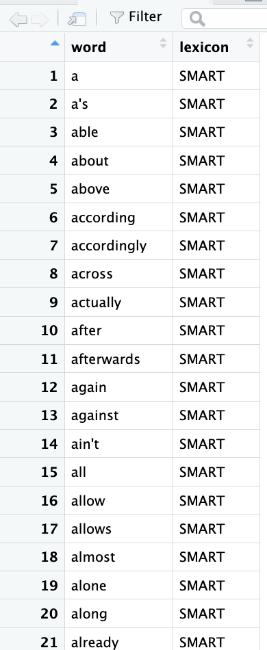
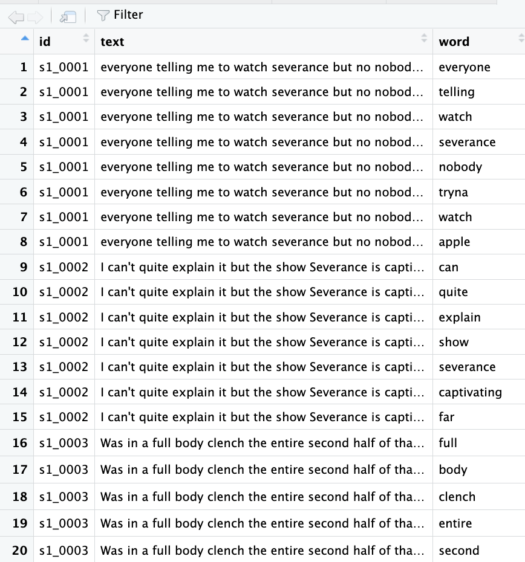

Stop Words Removal
Stop words are commonly occurring words that are usually filtered out during natural language processing, as they carry minimal semantic weight and are not as useful for feature extraction.
Examples include articles (i.e., a, an, the), prepositions (e.g., in, on, at), conjunctions (and, but, or), and pronouns (they, she, he), but the list goes on. While they appear often in text, they usually don’t add significant meaning to a sentence or search query.
By ignoring stop words, search engines, databases, chatbots and virtual assistants can improve the speed of crawling and indexing and help deliver faster, more efficient results. Similar posistive effects applies to other NLP tasks and models performance, including sentiment analysis.
For this workshop, we will be using the package stopwords (more info) which is considered a “on-stop stopping” for R users. For English language, the package relies on the Snowball list. But, before we turn to our worksheet to see how that process looks like and how it will apply to our data, let’s have a little challenge!
Now, let’s return to the worksheet and see how we can put that into practice.
SMART, Snowbal and Onix are the three lexicons available to handle stopwords through the the tidytext ecossytem. They serve the same purpose, removing common, low-information words, but they differ in origin, size, and linguistic design. For this workshop, we will adopt the Snowball list because its less restrictive nature, which helps preserve context, especially important for NLP tasks such as topic modeling, sentiment analysis, or classification.
We will start our stop word removal by calling data("stop_words") to load a built-in dataset from the tidytext package. This should create a dictionary containing 1,149 words as part of the lexicon’s library.

Then, we will apply the expression filter(lexicon == "snowball") to select the Snowball source (or lexicon). The double equal sign == it is a comparison operator which checks for equality.
Next, select(word) line keeps only the column called word, dropping other columns like the source name. This gives you a clean list of Snowball stopwords.
Next, we will remove stopwords from the tokenized text. The anti_join(..., by = "word") function keeps only the words that do not match any word in the Snowball stopword list. The result, stored in nonstopwords, is a dataset containing only the meaningful words from your text, with the common stopwords removed.
The code chunk, should look like:
# Load stop words
data("stop_words")
# Filter for Snowball stopwords only (less aggressive than SMART)
snowball_stopwords <- stop_words %>%
filter(lexicon == "snowball") %>%
select(word) # keep only the 'word' column
# Remove stopwords from your tokenized data
nonstopwords <- tokenized %>%
anti_join(snowball_stopwords, by = "word")Awesome! This step should bring our token count down to 74,264 by removing filler and unnecessary words:

We are now ready to move to lemmatization.